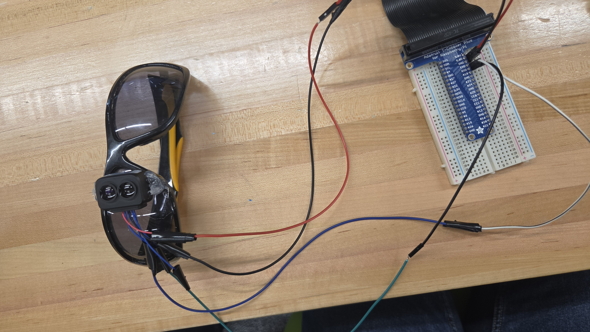
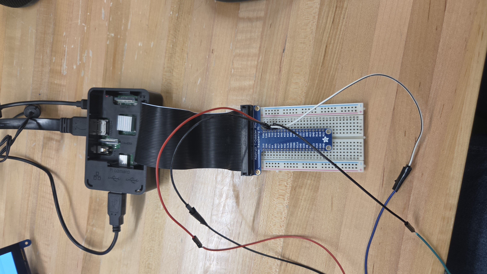
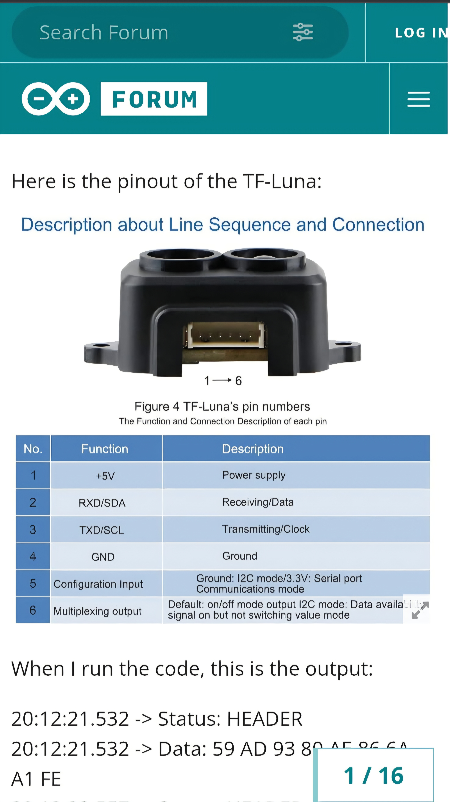

Our project is a “Kane-less Kane” a handheld device designed to help detect obstacles for visually impaired users. We used a Raspberry Pi, a TF-Luna LiDAR sensor, and a Speaker for audio feedback. The TF-Luna LiDAR measures distance using a laser. It sends distance data to the Raspberry Pi through a communication interface (UART serial). The Raspberry Pi processes that data in real time. When an object gets too close, the system triggers a sound alert through the speaker.



import serial
import time
import math
import pygame
import array
# ----------------------------
# AUDIO SETUP
# ----------------------------
pygame.mixer.pre_init(44100, -16, 1, 512)
pygame.init()
def make_beep(frequency=1000, duration=0.08, volume=0.5, sample_rate=44100):
n_samples = int(sample_rate * duration)
buf = array.array("h")
amplitude = int(32767 * volume)
for i in range(n_samples):
sample = int(amplitude * math.sin(2 * math.pi * frequency * i / sample_rate))
buf.append(sample)
return pygame.mixer.Sound(buffer=buf)
beep = make_beep()
# ----------------------------
# TF-Luna SERIAL SETUP
# ----------------------------
ser = serial.Serial('/dev/serial0', 115200, timeout=0.1)
# ----------------------------
# READ LATEST DISTANCE
# ----------------------------
def get_latest_distance():
# Throw away stale buffered data
if ser.in_waiting > 100:
ser.reset_input_buffer()
latest_distance = None
latest_strength = None
start = time.time()
while time.time() - start < 0.2:
first = ser.read(1)
if not first or first[0] != 0x59:
continue
second = ser.read(1)
if not second or second[0] != 0x59:
continue
rest = ser.read(7)
if len(rest) != 7:
continue
frame = [0x59, 0x59] + list(rest)
checksum = sum(frame[:8]) & 0xFF
if checksum != frame[8]:
continue
distance = frame[2] + (frame[3] << 8)
strength = frame[4] + (frame[5] << 8)
if strength < 100:
continue
latest_distance = distance
latest_strength = strength
return latest_distance, latest_strength
def distance_to_delay(distance_cm):
min_dist = 20
max_dist = 200
if distance_cm <= min_dist:
return 0.08
if distance_cm >= max_dist:
return 1.2
ratio = (distance_cm - min_dist) / (max_dist - min_dist)
return 0.08 + ratio * (1.2 - 0.08)
# ----------------------------
# MAIN LOOP
# ----------------------------
print("Distance beep system active...")
last_beep_time = 0
last_distance = None
while True:
distance, strength = get_latest_distance()
if distance is not None:
last_distance = distance
delay = distance_to_delay(distance)
print(f"Distance: {distance} cm | Strength: {strength} | Delay: {delay:.2f}s")
now = time.time()
if now - last_beep_time >= delay:
beep.play()
last_beep_time = now
time.sleep(0.02)